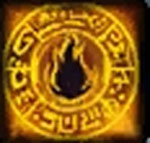

Enciclica degli Incantesimi Generali di Tanatos
1° LIVELLO DI POTERE
| Bless | Summoning |
| Sphere : | All |
| Range : | 0 |
| Components : | V, S, M |
| Duration : | 6 rounds |
| Casting Time : | 1 round |
| Area of Effect : | Speciale |
| Saving Throw : | None |
Attraverso questa magia il chierico invoca la benedizione della propria divinità su di sé e suoi compagni. Oltre ad avere, in ogni caso, effetti sul chierico, la magia influenzerà una creatura supplementare per ogni livello di lancio della stessa (fino ad un massimo di 10 creature supplementari al 10° livello di lancio) che si trovino ad una distanza massima di 30 metri dal chierico al momento del lancio dell'incantesimo. Chi si trova sotto gli effetti di questo incantesimo riceve un bonus di +1 a tutti i tiri per colpire ed un bonus di +1 a tutti i tiri salvezza contro paura. Si noti che questi bonus, come del resto ogni altro bonus di origine divina, non si cumulano con bonus, sempre di origine divina, che incidano sul medesimo tiro od effetto (si pensi ad es. ai medesimi bonus concessi dagli incantesimi Aid, Chant e Prayer). Il componente materiale di questo incantesimo è una boccetta d'acqua santa che si consuma al momento del lancio.
| Blessed Watchfulness | Alteration |
| Sphere : | Guardian |
| Range : | Tocco |
| Components : | V, S |
| Duration : | 4 ore + 1 ora per livello |
| Casting Time : | 4 |
| Area of Effect : | Una creatura |
| Saving Throw : | None |
Attraverso questa magia il chierico infonde superiori poteri di attenzione ed osservazione sulla creatura toccata. Per tutto l'effetto della magia la creatura riceve un bonus di +2 a tutte le prove di osservare e può essere sorpresa solo con un risultato di 1 naturale sul tiro della sorpresa (indipendentemente dall'applicazione di eventuali malus al tiro). La creatura, inoltre, potrà effettuare anche lunghi turni di guardia senza distrarsi. La creatura, infine, riceve un bonus di +1 a tutti i tiri salvezza contro incantesimi mentali e riceve una percentuale di resistere (come se fosse dotato di resistenza magica) a qualsiasi magia di sonno od assopimento (si considerino ad esempio gli effetti magici delle magie sleep e slumber) pari al 20% + 5% per livello di lancio della magia (fino ad una possibilità massima del 95%).
| Call Upon Faith | Summoning |
| Sphere : | Summoning |
| Range : | 0 |
| Components : | V, S, M |
| Duration : | Speciale |
| Casting Time : | 1 |
| Area of Effect : | The Caster |
| Saving Throw : | None |
Prima di iniziare una qualsiasi difficile azione il chierico può invocare l'aiuto della propria divinità. In questo modo il chierico otterrà un beneficio corrispondente ad un bonus +3 (+15%) che potrà applicare ad un singolo tiro necessario ad effettuare il compimento dell'azione. Questo beneficio può essere utilizzato solo per il compimento di un'azione che inizi e si concluda nel round immediatamente successivo a quello del lancio della presente magia. Si noti che questo incantesimo non può essere utilizzato nel caso in cui il chierico desideri effettuare un'azione consistente nell'invocare un intervento divino. Il componente materiale di questo incantesimo è il simbolo sacro del chierico.
| Combine | Summoning |
| Sphere : | All |
| Range : | Tocco |
| Components : | V, S |
| Duration : | Speciale |
| Casting Time : | 1 round |
| Area of Effect : | Speciale |
| Saving Throw : | None |
Questo incantesimo cumulativo può essere utilizzato da due a quattro chierici. La magia, per precisione, viene utilizzata sempre sul chierico del livello di esperienza più lato (in caso di chierici di pari livello su uno a loro scelta) da quelli di livello più basso. Costoro lanciano la magia toccando il chierico che deve ottenere gli effetti benefici. Quest'ultimo quindi potrà considerarsi, fino a che perdura questa magia, di un livello di esperienza superiore per ogni chierico che ha utilizzato su di lui questo incantesimo al solo fine di effettuare un'azione di scacciare o controllare i non morti e di determinare il livello di lancio dei propri incantesimi. Si noti che, nonostante il chierico possa lanciare magie ad un livello di lancio superiore, questo incantesimo non permette al chierico di accedere a magie diverse da quelle alle quali aveva regolarmente accesso né di ottenere punti preghiera supplementari. Per funzionare la magia richiede che il chierico beneficiario non si sposti dalla posizione occupata al momento del suo lancio nonché il mantenimento della concentrazione da parte dei chierici che l'hanno lanciata i quali, se attaccati durante il mantenimento della concentrazione, saranno considerati (sempre che non decidano di interromperla) come se fossero storditi [stunned]. Se, per qualsiasi motivo, viene meno la concentrazione del chierico che ha lanciato questo incantesimo od il suo contatto fisico con il beneficiario (ad es. il chierico che ha lanciato la magia si sposta o cade al suolo knockdown) la magia terminerà immediatamente solo in relazione al chierico che ha interrotto la concentrazione. Se, invece, è il chierico che beneficia di questa magia a spostarsi dalla posizione originariamente occupata (od a cadere al suolo knockdown) costui farà venir meno tutte le magie di combine che gli erano state lanciate. Si noti, infine, che se è solo il chierico beneficiario a perdere la concentrazione nel lancio delle sue magie ciò non influenzerà gli incantesimi di combine che gli erano stati lanciati addosso.
| Command | Charm |
| Sphere : | Law |
| Range : | 15 metri |
| Components : | V |
| Duration : | Speciale |
| Casting Time : | 1 |
| Area of Effect : | Una creatura |
| Saving Throw : | Speciale |
Questo incantesimo mentale permette al chierico di comandare un'altra creatura utilizzando una singola parola. Per poter avere effetto la magia deve essere lanciata su una creatura intelligente (almeno Low Intelligent 5-7) che sia in grado di udire e comprendere la parola di comando utilizzata dal chierico (deve, ad esempio, conoscere la lingua utilizzata dal chierico). Nel round immediatamente successivo a quello di lancio, quindi, la creatura obbedirà meccanicamente al comando dato dal chierico. Il chierico può imporre alla creatura qualsiasi comando possa esprimere ragionevolmente utilizzando un'unica parola. Se il comando risulta di impossibile esecuzione la magia fallirà miseramente. Ogni comando di tipo suicida, comportante in via diretta la morte della creatura (si pensi al comando di buttarsi nella lava o in un precipizio) e lo stesso comando "suicidati" sarà automaticamente ignorato e farà fallire la magia. Unica eccezione è rappresentata dal comando "muori" o da comandi ad esso equivalenti (si pensi a "svieni" e "stordisciti"). In questo caso, la creatura si considererà stordita (stunned) per l'intero round successivo a quello di lancio dell'incantesimo. Comandi del genere "fermati", "bloccati", "paralizzati" e comandi ad essi equivalenti renderanno la creatura impedita (hindered) per l'intero round successivo a quello di lancio dell'incantesimo. Ogni comando comportante un serio pregiudizio per gli interessi o per l'incolumità fisica della creatura (si pensi al comando di gettare le armi nel corso di un combattimento, oppure al comando di entrare nel fuoco o in una nube tossica) potrà essere disobbedito dalla creatura la quale, però, sarà considerata impedita (hindered) per l'intero round successivo al lancio della magia. Deve puntualizzarsi che la magia ha effetto solo nel round immediatamente successivo a quello di lancio, essendo la vittima libera di agire senza limitazioni successivamente allo stesso. La magia ha effetto direttamente sulle menti deboli, infatti, hanno diritto ad un tiro salvezza contro incantesimi mentali per evitarne gli effetti solo le creature che posseggono 5 o più dadi vita o livelli e quelle dotate di elevata intelligenza (almeno Highly intelligent 13-14).
| Cure Light Wounds | Necromancy |
| Sphere : | Healing |
| Range : | Tocco |
| Components : | V, S |
| Duration : | Istantanea |
| Casting Time : | 5 |
| Area of Effect : | Una Creatura |
| Saving Throw : | None |
 |
Quando il chierico lancia questa magia la sua mano, risplendendo di un bagliore dorato, infonde nella creatura toccata un flusso di pura energia positiva. L'energia positiva sprigionata da questo incantesimo permetterà al chierico di curare 1d6+1 punti ferita persi, in precedenza, dalla creatura toccata. Questo incantesimo non avendo natura rigenerativa non permette di curare le ferite prodotte dall'acido. Questa magia, inoltre, non avrà alcun effetto sulle creature inanimate (si pensi ad una comune pianta) e sulle creature non dotate di un corpo organico basato sull'energia positiva (si pensi, ad esempio, alla categoria dei costruiti ed agli elementali). Infine, le creature la cui essenza si basa sull'energia negativa (si pensi ad i non-morti) non solo non riceveranno alcun beneficio dalla sottoposizione a questo incantesimo ma subiranno 1d6+1 danni per l'irradiamento di energia positiva per loro letale. |
| Detect Evil | Divination |
| Sphere : | Divination |
| Range : | 0 |
| Components : | V, S, M |
| Duration : | 1 turno |
| Casting Time : | 1 round |
| Area of Effect : | The Caster |
| Saving Throw : | Speciale |
Quando il chierico lancia questo incantesimo costui riesce a percepire la
malvagità presente nelle creature, nei luoghi o negli oggetti. In particolare,
per tutta la durata dell'incantesimo, il chierico potrà concentrarsi (azione
fisica complessa senza componenti ma che richiede il mantenimento della
concentrazione) per percepire le aure di malvagità presenti nelle sue adiacenze.
A partire dal round successivo al lancio, quando si concentra in questo modo,
infatti, il chierico percepirà la malvagità presente entro 30 metri di distanza
dalla sua persona. Si noti che solo se il chierico è in grado di vedere la
creatura o l'oggetto che la emana l'aura di malvagità potrà imputare allo stesso
l'emanazione delle radiazioni negative. Se, infatti, nell'area è presente
qualcuno o qualcosa che emana aura di malvagità che è nascosto alla vista del
chierico, costui percepirà solo un'indistinta e una non localizzata fonte di
male nelle vicinanze. Deve osservarsi che muri od altri ostacoli solidi spessi
almeno 50 cm. bloccano il passaggio delle radiazioni negative. Emanano aura di
malvagità e possono, quindi, essere percepiti dal chierico come malvagie le
seguenti cose:
- Tutte le creature di allineamento morale malvagio (creatura), queste hanno
diritto a superare un tiro salvezza contro incantesimi per evitare gli effetti
della magia. Si noti che una creatura che supera il tiro salvezza non dovrà
effettuarne nuovamente qualora il medesimo chierico lanci nuovamente questa
magia prima di aver raggiunto un nuovo livello di esperienza.
- Tutte gli oggetti magici intelligenti di allineamento morale malvagio
(creatura).
- Tutte gli oggetti rituali o sacri utilizzati nei riti delle divinità delle
Forze Oscure (oggetto).
- I templi attivi delle divinità delle Forze Oscure (luogo).
- Tutti gli oggetti ed i luoghi connessi ad attività demoniache (oggetto e
luogo).
Si noti che, qualora i suddetti oggetti sono indossati da una creatura, la
stessa, indipendentemente dal suo allineamento morale, dovrà superare un tiro
salvezza per evitare che gli stessi siano percepiti come malvagi dal chierico.
Anche in questo caso, la creatura che supera il tiro salvezza non dovrà
effettuarne nuovamente qualora il medesimo chierico lanci nuovamente questa
magia prima di aver raggiunto un nuovo livello di esperienza. In ogni caso una
creatura dovrà effettuare un solo tiro salvezza per occultare le radiazioni
malvagie emesse dalla sua persona e da tutti gli oggetti trasportati. Deve
osservarsi che questa magia non è in grado di percepire l'aura malvagia degli
artefatti magici. Il componente materiale di questo incantesimo è il simbolo
sacro del chierico.
| Detect Magic | Divination |
| Sphere : | Divination |
| Range : | 0 |
| Components : | V, S, M |
| Duration : | 1 round |
| Casting Time : | 1 round |
| Area of Effect : | The Caster |
| Saving Throw : | None |
Quando il chierico lancia questo incantesimo riesce a percepire la luminosità delle aure magiche presenti entro 30 metri di distanza dallo stesso. Per poter percepire la luminosità dell'aura, però, il chierico deve poter vedere, anche se parzialmente, l'oggetto o la zona in cui l'aura è in effetto. Un chierico non potrà vedere, ad es. l'aura di un oggetto magico che si trova all'interno di uno zaino o sepolto da macerie. In base all'intensità dell'aura, inoltre, il chierico potrà determinare la potenza dell'incantamento. Se si tratta di effetti magici dovuti ad incantesimi, quindi, il chierico potrà determinare il livello di potere della magia di cui analizza gli effetti. Se, invece, si tratta di oggetti magici costui potrà determinarne la potenza dell'incantamento come indicata nella seguente scala:
|
POTENZA DELL'INCANTAMENTO |
PUNTI ESPERIENZA |
| Least Minor Enchantment | 75 punti esperienza |
| Lesser Minor Enchantment | 100 punti esperienza |
| Minor Enchantment | 150 punti esperienza |
| Superior Minor Enchantment | 250 punti esperienza |
| Greater Minor Enchantment | 375 punti esperienza |
| Lesser Enchantment | 500 punti esperienza |
| Superior Enchantment | 1000 punti esperienza |
| Greater Enchantment | 1500 punti esperienza |
Il componente materiale di questo incantesimo è il simbolo sacro del chierico.
| Light | Evocation |
| Sphere : | Creation |
| Range : | 12 metri + 6 metri per livello di lancio oltre il 1° (max. 54 metri) |
| Components : | V, S |
| Duration : | Speciale |
| Casting Time : | 4 |
| Area of Effect : | Speciale |
| Saving Throw : | Speciale |
Con questa magia
il chierico invoca il potere della luce. Il chierico può utilizzare questa magia
in due modalità. Con il primo metodo il chierico crea un globo luminoso al fine
di illuminare. La luce del globo illuminerà come una lanterna in una sfera di 9
metri di raggio. La sfera apparirà anche sospesa nell'aria nel punto indicato
dal chierico entro il raggio d'azione dell'incantesimo. Qualora il chierico
lancia la magia su un oggetto la sfera si sposterà con lo stesso. Si noti che,
poiché la luce parte dalla sfera per poi espandersi nell'area d'effetto, qualora
la luce sia creata su un oggetto indossato o trasportato da una creatura la
stessa potrà essere disturbata dal bagliore qualora decida di combattere con
altre creature ricevendo un malus di -2 ai propri tiri per colpire ed il 20% di
fallire nel lancio degli incantesimi (la penalità relativamente al lancio degli
incantesimi non si applicherà qualora la luce sia posta sulla punta di una verga
della stregoneria utilizzata nel lancio delle magie). La magia lanciata secondo
tale modalità non può essere lanciata su oggetti trasportati da creature che non
siano consenzienti. In alcuni casi l'incantesimo lanciato con il seguente metodo
può servire per neutralizzare tenebre create magicamente quando ciò è
espressamente previsto da tali effetti. Si consideri ad esempio l'incantesimo od
il potere Darkness. Per ottenere questo effetto la magia deve essere
necessariamente essere lanciata per tal finalità. In quest'ultimo caso, il globo
di luce non apparirà ma al contempo svaniranno le tenebre create magicamente.
Entrare con una sfera di luce in un'area di tenebre magiche, infatti, non farà
venire meno le stesse anche se la luce (nonostante risulti oscurata) continuerà
ad avere effetto (riprendendo ad illuminare quando sarà portata all'esterno
dell'area tenebrosa). Lanciata secondo tale metodo la sfera luminosa permarrà
per 1 ora per livello di lancio dell'incantesimo.
Con il secondo metodo il chierico invoca il potere della luce per accecare un
proprio avversario che si trovi nel raggio d'azione dell'incantesimo. Quando è
lanciata in questa modalità nessuna sfera luminosa apparirà. Solo creature
munite di una normale vista (occhi) possono subire gli effetti di questo
incantesimo. La vittima ha diritto ad effettuare un tiro salvezza contro
incantesimi per evitare gli effetti della luce. Se il tiro salvezza fallisce la
creatura sarà accecata per 1d3+2 rounds. In questo caso, la cecità non potrà
essere annullata con un incantesimo di tenebre ma potrà essere rimossa da una
magia di Cure Blindness o con un Dispel Magic lanciato con successo.
| Protection from Chaos | Abjuration |
| Sphere : | Law |
| Range : | Tocco |
| Components : | V, S, M |
| Duration : | 3 round per livello |
| Casting Time : | 4 |
| Area of Effect : | Una Creatura |
| Saving Throw : | None |
Questo incantesimo
protegge la creatura che lo riceve in tre diverse modalità:
1) Tutte le creature di indole caotica (allineamento chaotic) che attaccano chi
è protetto da questo incantesimo ricevono -2 ai loro tiri per colpire. Inoltre,
qualora creature della medesima indole impongano in via diretta (ad esempio
attraverso un incantesimo od un'abilità speciale) a chi è protetto da questa
magia il superamento di un qualsiasi tiro salvezza quest'ultimo riceverà un
bonus di +2 al tiro per superarlo. I medesimi benefici si applicano nei
confronti delle creature che, sebbene non siano di indole caotica, si trovano
sotto gli effetti di una qualsiasi forma di confusione magica.
2) La protezione magica previene il contatto fisico tra il corpo di chi riceve
questo incantesimo ed il corpo di qualsiasi creatura di indole caotica che sia
di origine extraplanare (si pensi ad esempio ad un elementale od ad un essere
demoniaco) nonché con quello di creature, sempre di indole caotica, "richiamate"
nel Primo Piano Materiale tramite magie della scuola Summoning od effetti magici
e rituali ad esse equivalenti. Si noti che la protezione magica previene solo il
contatto fisico diretto tra i due corpi impedendo ad esempio l'utilizzo di
attacchi fisici naturali o di poteri attivabili a tocco. Non saranno, invece,
impediti attacchi che avvengono attraverso l'uso di armi nonché ogni forma di
attacco o di utilizzo di potere a distanza. Se chi è protetto da questa magia,
però, effettuerà una qualsiasi forma di attacco nei confronti di una creatura
che era impossibilitata a toccarlo questa seconda forma di protezione sarà
immediatamente interrotta esclusivamente nei confronti della specifica creatura
attaccata.
3) La protezione magica dona a chi la riceve una possibilità di resistere al
magico (magic resistance) pari al 10% + 5% per livello di lancio nei confronti
di qualsiasi incantesimo clericale della sfera Chaos. Si noti che questa
resistenza al magico non può essere in alcun caso annullata dal beneficiario per
l'intera durata dell'incantesimo.
Il componente materiale di questo incantesimo è un anello d'oro forgiato da un
fabbro di indole legale dal valore minimo di 12 g.p. e dal peso di 1/10 di
libbra che si consuma al lancio dell'incantesimo.
| Protection from Evil | Abjuration |
| Sphere : | Protection |
| Range : | Tocco |
| Components : | V, S, M |
| Duration : | 3 rounds / livello |
| Casting Time : | 4 |
| Area of Effect : | Creatura toccata |
| Saving Throw : | None |
Questo incantesimo
protegge la creatura che lo riceve in due diverse modalità:
1) Tutte le creature di indole malvagia (allineamento evil) che attaccano chi è
protetto da questo incantesimo ricevono -2 ai loro tiri per colpire. Inoltre,
qualora creature della medesima indole impongano in via diretta (ad esempio
attraverso un incantesimo od un'abilità speciale) a chi è protetto da questa
magia il superamento di un qualsiasi tiro salvezza quest'ultimo riceverà un
bonus di +2 al tiro per superarlo.
2) La protezione magica previene il contatto fisico tra il corpo di chi riceve
questo incantesimo ed il corpo di qualsiasi creatura di origine extraplanare (si
pensi ad esempio ad un elementale od ad un essere demoniaco) nonché con quello
di creature "richiamate" nel Primo Piano Materiale tramite magie della scuola
Summoning od effetti magici e rituali ad esse equivalenti. Si noti che la
protezione magica previene solo il contatto fisico diretto tra i due corpi
impedendo ad esempio l'utilizzo di attacchi fisici naturali o di poteri
attivabili a tocco. Non saranno, invece, impediti attacchi che avvengono
attraverso l'uso di armi nonché ogni forma di attacco o di utilizzo di potere a
distanza. Se chi è protetto da questa magia, però, effettuerà una qualsiasi
forma di attacco nei confronti di una creatura che era impossibilitata a
toccarlo questa seconda forma di protezione sarà immediatamente interrotta
esclusivamente nei confronti della specifica creatura attaccata.
Il componente materiale di questo incantesimo è una fiaschetta di acqua santa o
una dose di incenso bruciata in un incensiere che si consumano al lancio
dell'incantesimo.
| Purify Food and Drink | Alteration |
| Sphere : | All |
| Range : | 30 metri |
| Components : | V, S |
| Duration : | Istantanea |
| Casting Time : | 1 round |
| Area of Effect : | Speciale |
| Saving Throw : | None |
Attraverso questo incantesimo il chierico è in grado di purificare bevande o cibo che era stato in qualsiasi modo contaminato (ad esempio avvelenato od in stato di putrefazione). Si noti che questa magia funziona solo sul cibo per cui può essere utilizzata sulla carne solo dopo che la stessa sia stata macellata non potendo la magia essere lanciata direttamente su un cadavere. Stesso discorso vale per le bevande che devono essere state imbottigliate (non potendosi ad es. lanciarsi la magia su un pozzo) e sui frutti e le verdure che devono essere stati in precedenza raccolti (non potendo la magia essere lanciata direttamente sulla pianta). Il cibo o le bevande così purificate saranno buone da mangiare e da bere (ovviamente qualora fosse necessario cuocerle sarà comunque ancora necessario farlo). La magia non previene il naturale decadimento dei prodotti successivamente al suo lancio od, in ogni caso, una eventuale nuova contaminazione degli stessi. Per ogni livello di lancio dell'incantesimo il chierico può purificare un ammontare di cibo e bevande sufficienti a sfamare e dissetare una creatura di taglia media per un intero giorno. Questo incantesimo non ha alcun effetto su cibi o bevande magiche (si pensi ad una pozione) od in altro modo incantati (si pensi ad una razione che è stata oggetto di una maledizione).
| Remove Fear | Charm |
| Sphere : | Charm |
| Range : | 12 metri |
| Components : | V, S |
| Duration : | Speciale |
| Casting Time : | 1 |
| Area of Effect : | 1 creatura + 1/4 Livelli |
| Saving Throw : | Speciale |
Con questo incantesimo il chierico infonde nell'animo di chi lo riceve grande coraggio donandogli, quindi, un bonus di +4 a tutti i tiri salvezza contro ogni forma di paura (fear) per 1 turno. Se, invece, chi riceve questo incantesimo, avendo già fallito uno o più tiri salvezza contro una qualsiasi forma di paura, si trova sotto gli effetti di questa, costui avrà diritto a ripetere i tiri salvezza falliti con l'applicazione di un bonus di+2 al tiro. In tale ultimo caso, però, la magia terminerà immediatamente dopo che il soggetto ha ripetuto i suddetti tiri salvezza. L'incantesimo avrà effetto su una creatura più una creatura ogni quatto livelli di lancio oltre il primo (1 creatura dal 1° al 4° livello, 2 creature dal 5° all'8° livello, e così via).
| Sanctuary | Abjuration |
| Sphere : | Protection |
| Range : | Tocco |
| Components : | V, S, M |
| Duration : | 2 rounds + 1 round/livello |
| Casting Time : | 4 |
| Area of Effect : | Una creatura |
| Saving Throw : | Speciale |
Quando il chierico lancia questa magia la creatura che la riceve viene protetta dalla divinità agli occhi dei propri nemici. Tutte le creature ostili alla creatura protetta presenti al momento del lancio o che la incontrino nel corso della durata della magia devono effettuare un tiro salvezza contro incantesimi. Se il tiro salvezza è fallito costoro perderanno la consapevolezza della presenza della creatura protetta agendo come se la stessa non fosse presente per tutta la durata dell'incantesimo. Se, però, la creatura protetta effettuerà una qualsiasi azione possa essere considerata, anche in senso lato, offensiva (sia direttamente che indirettamente) nei confronti di una qualsiasi creatura (non solo quindi nei confronti di chi ha fallito il tiro salvezza) la magia terminerà alla fine del round in cui il soggetto ha posto in essere tale azione (ad esempio riattivare una trappola precedentemente disattivata sarà considerata un'azione di tipo offensivo). Si noti che il lancio di incantesimi di mero potenziamento, di protezione o di cura effettuati sulla propria persona non saranno in alcun caso ritenute azioni di tipo offensivo, laddove, invece, se tali incantesimi siano lanciati su una diversa creatura questi potranno assumere (ad insindacabile giudizio del Dungeon Master) i connotati di un'azione di tipo offensivo. Il componente materiale di questo incantesimo è il simbolo sacro del chierico ed un piccolo specchio d'argento dal peso di 1/2 libbra e dal costo di 15 g.p. che si consuma al momento del lancio.
| Sunscorch | Evocation |
| Sphere : | Sun |
| Range : | 30 metri |
| Components : | V, S |
| Duration : | Istantanea |
| Casting Time : | 4 |
| Area of Effect : | Una creatura |
| Saving Throw : | Negates |
Attraverso questo incantesimo il chierico fa cadere dal cielo un raggio di luce solare sulla creatura che ha individuato come bersaglio. Questa magia può essere lanciata solo dove risplende la luce del sole, quindi non può essere usata di notte, nelle caverne e nelle giornate troppo nuvolose anche se pochi nembi non inficiano la magia. In ogni caso, occorre che sia il caster che il suo bersaglio si trovino all'interno dell'area illuminata dalla luce solare. La creatura avrà diritto a superare un tiro salvezza contro incantesimi per evitare il raggio di luce solare. Se il tiro salvezza fallisce la creatura sarà colpita dal raggio di luce solare e subirà 1d6 danni da calore +1 per ogni livello di lancio dell'incantesimo fino ad un massimo di 1d6+9 danni da calore al nono livello di lancio. Poichè il raggio di luce è carico di energia positiva, i non morti colpiti dal raggio di luce solare subiranno ulteriori 1d6 danni da irradiamento di energia positiva.
2° LIVELLO DI POTERE
| Aid | Summoning |
| Sphere : | Combat |
| Range : | Tocco |
| Components : | V, S, M |
| Duration : | 1 round + 1round/livello |
| Casting Time : | 5 |
| Area of Effect : | Una Creatura |
| Saving Throw : | None |
Chi riceve questo incantesimo viene benedetto ed aiutato dalla divinità ottenendo per tutta la sua durata un bonus di +1 al tiro per colpire e di +1 a tutti i tiri salvezza. Si noti che questi bonus, come del resto ogni altro bonus di origine divina, non si cumulano con bonus, sempre di origine divina, che incidano sul medesimo tiro od effetto (si pensi ad es. al bonus al tiro per colpire od ai tiri salvezza contro paura donato dall'incantesimo di primo livello di potere Bless o da quelli similari donati dalle magie Chant e Prayer). Oltre a tali bonus il soggetto che riceve questo incantesimo vedrà aumentati temporaneamente i propri punti ferita di 1d8. Tali punti ferita supplementari non possono essere recuperati in alcun modo (ad es. tramite cure magiche) e saranno i primi ad essere eliminati in caso di danni (la creatura protetta quindi perderà questi punti supplementari prima di perdere i propri punti ferita) ed in ogni caso questi svaniranno al termine della durata dell'incantesimo. Il componente materiale di questo incantesimo è il simbolo sacro del chierico ed una striscia di veste bianca cosparsa di resina dal valore di 2 monete d'oro e dal peso di 0.2 libbre che si consuma al momento del lancio dell'incantesimo.
| Calm Violence | Charm |
| Sphere : | Law |
| Range : | 0 |
| Components : | V, S, M |
| Duration : | 5 rounds |
| Casting Time : | 3 |
| Area of Effect : | Speciale |
| Saving Throw : | Negates |
Con questo incantesimo il chierico cerca di fermare temporaneamente la violenza che si verifica intorno alla sua persona. Il chierico lancia questa magia e pronuncia contestualmente parole di pace. La magia avrà effetto su un numero massimo di creature pari a 2 + 1 per livello di lancio della magia che si trovino, al momento del suo lancio, nell'area d'effetto della stessa (sfera di 30 metri di raggio centrata sul chierico). Il chierico non può scegliere su quali creature la magia avrà effetto. L'incantesimo, infatti, avrà effetto sulle creature presenti nell'area in ordine di distanza crescente dal chierico (dalle più vicine alle più lontane), in caso di creature equidistanti presenti in numero superiore a quelle condizionabili dal chierico si sceglierà causalmente quali risultino coinvolte. Al lancio dell'incantesimo il chierico dovrà superare una prova di carisma. Tutte le creature coinvolte dovranno superare un tiro salvezza contro incantesimi mentali, se il chierico ha superato la prova di carisma tutte le creature subiranno un malus di -2 al tiro salvezza (subiranno una penalità di -4 se la prova + superata con successo critico, otterranno un bonus di +2 se la prova è fallita con fallimento critico). Le creature che falliscono il tiro salvezza saranno obbligate a non commettere azioni violente (attacchi fisici, lancio di magie di danno, ecc…) nei confronti di ogni altra creatura per tutta la durata della magia. In particolare, costoro potranno, sotto l’effetto di questa magia, lanciare magie protettive, muoversi, preparare armi, difendersi, parare, schivare, scappare, usare oggetti magici non nocivi per le altre creature, ecc... ma non potrà nuocere in alcun modo con azioni che abbiano come loro conseguenza diretta danneggiare altre creature (anche attivando per es. trappole, tagliare per es. la corda di una creatura che sta scalando una parete, ecc…). Si noti che qualora, durante l'effetto della magia, una creatura che ha fallito il tiro salvezza risulti attaccata da una creatura avversaria (o subisca da parte di questa un'azione che in base alla valutazione del Dungeon Master può considerarsi deliberatamente ostile) la stessa sarà considerata libera a partire dalla fine del round in corso. A tal fine saranno considerati solo gli attacchi (e le azioni ostili) che coinvolgono direttamente la creatura sottoposta agli effetti dell'incantesimo, essendo irrilevanti azioni ostili compiute nei confronti di suoi amici od alleati. Il componente materiale è il simbolo sacro del chierico.
| Chant | Conjuration/Summoning |
| Sphere : | All |
| Range : | 0 |
| Components : | V, S |
| Duration : | Speciale |
| Casting Time : | 1 round |
| Area of Effect : | Speciale |
| Saving Throw : | None |
Quando il chierico lancia questa magia costui inizia a cantare una litania liturgica al fine di portare la grazia divina sui suoi compagni e lo sconforto sui suoi nemici. A partire dal round successivo a quello di lancio e fino a che il chierico resta in concentrazione continuando a cantare tutti i suoi compagni che si trovano entro 15 metri di distanza dal chierico ricevono un bonus di +1 ai tiri per colpire ai danni (si considera bonus divino che permette di superare i massimali dovuti alla forza) ed ai tiri salvezza. Parimenti, tutte le creature ostili al chierico riceveranno una corrispondente penalità di -1 ai medesimi tiri. Questo beneficio e questi malus permangono fino a quando il chierico resta fermo sul posto, cantando e mantenendo la concentrazione. Se per qualsiasi motivo, infatti, il chierico interrompe la concentrazione, effettua una qualsiasi azione complessa, si muove o smette di cantare (anche se involontariamente, ad esempio se vittima di una magia di silenzio) la magia terminerà immediatamente e definitivamente. Si noti che questi bonus, come del resto ogni altro bonus di origine divina, non si cumulano con bonus, sempre di origine divina, che incidano sul medesimo tiro od effetto (si pensi ad es. ai medesimi bonus concessi dagli incantesimi Bless, Aid e Prayer).
| Cure Moderate Wounds | Necromancy |
| Sphere : | Healing |
| Range : | Tocco |
| Components : | V, S |
| Duration : | Istantanea |
| Casting Time : | 6 |
| Area of Effect : | Una Creatura |
| Saving Throw : | None |
|
|
Quando il chierico lancia questa magia la sua mano, risplendendo di un bagliore dorato, infonde nella creatura toccata un flusso di pura energia positiva. L'energia positiva sprigionata da questo incantesimo permetterà al chierico di curare 2d6+1 punti ferita persi, in precedenza, dalla creatura toccata. Questo incantesimo non avendo natura rigenerativa non permette di curare le ferite prodotte dall'acido. Questa magia, inoltre, non avrà alcun effetto sulle creature inanimate (si pensi ad una comune pianta) e sulle creature non dotate di un corpo organico basato sull'energia positiva (si pensi, ad esempio, alla categoria dei costruiti ed agli elementali). Infine, le creature la cui essenza si basa sull'energia negativa (si pensi ad i non-morti) non solo non riceveranno alcun beneficio dalla sottoposizione a questo incantesimo ma subiranno 2d6+1 danni per l'irradiamento di energia positiva per loro letale. |
| Enthrall | Charm |
| Sphere : | Charm/Law |
| Range : | 0 |
| Components : | V, S |
| Duration : | Speciale |
| Casting Time : | 1 round |
| Area of Effect : | Speciale |
| Saving Throw : | Negates |
Quando il chierico lancia questa magia mentale costui inizia a predicare ad alta voce selezionando le creature che vuole coinvolgere negli effetti dell'incantesimo. Ovviamente la magia può funzionare solo nei confronti delle creature che abbiano una certa intelligenza (almeno Low Intelligent 5-7) e siano in grado di comprendere ed ascoltare la lingua del chierico (il chierico deve scegliere al momento del lancio la lingua da usare senza poterla modificare nel corso dell'incantesimo). Il chierico può coinvolgere un numero massimo di creature pari a cinque + una creatura per livello di lancio dell'incantesimo presenti tutte entro 30 metri di distanza dallo stesso al momento del lancio della magia. Deve immediatamente osservarsi che le creature con un punteggio di saggezza pari o superiore a 16 e quelle con un ammontare di dadi vita/livelli pari o superire a 5 sono immuni agli effetti di questa magia. Le creature selezionate, quindi, dovranno superare un tiro salvezza contro incantesimi mentali. Le creature che falliscono il tiro salvezza resteranno imbambolate ad ascoltare le parole del chierico per tutta la durata della magia. Al lancio dell'incantesimo il chierico potrà effettuare una prova di carisma. Se la prova è effettuata con successo le vittime riceveranno una penalità di -1 al tiro salvezza, in caso di successo critico costoro riceveranno un malus di -2 al tiro salvezza, in caso di fallimento le vittime riceveranno una bonus di +1 al tiro salvezza, in caso di fallimento critico costoro riceveranno un bonus di +2 al tiro salvezza. Se la magia è lanciata nel corso di un combattimento, nell'imminenza dello stesso, oppure nei confronti di creature apertamente e dichiaratamente ostili nei confronti del chierico, le creature soggette riceveranno un bonus di +2 al tiro salvezza. La magia permane fino a che il chierico resta fermo sul posto, predicando e mantenendo la concentrazione. Se per qualsiasi motivo, infatti, il chierico interrompe la concentrazione, effettua una qualsiasi azione complessa, si muove o smette di predicare (anche se involontariamente, ad esempio se vittima di una magia di silenzio) la magia terminerà ma i suoi effetti continueranno per breve tempo. Infatti, anche nel round in cui la magia è terminata nonché nei 1d2 round successivi, le creature che avevano fallito il tiro salvezza resteranno ferme a meditare sulle parole del chierico prima di liberarsi dagli effetti della magia. Si noti che le creature imbambolate, sebbene presenti e consapevoli di ciò che gli accade intorno, non presteranno alcuna attenzione a quello che avviene ritenendo di estrema importanza unicamente ascoltare le parole del chierico. Queste creature, quindi, nonostante non possano agire, non otterranno alcuna penalità di combattimento. Se, però, una qualsiasi creatura sotto gli effetti dell'incantesimo subisce un attacco, subisce un'altra azione fisica deliberatamente ostile o subisce, in qualsiasi modo, la perdita di punti ferita, ogni effetto magico terminerà immediatamente nei confronti di tutte le creature coinvolte alla fine del round in cui il disturbo è avvenuto. In questo caso, però, tutte le creature che erano sotto gli effetti della magia proveranno un odio irrefrenabile nei confronti della fonte (o delle fonti) di disturbo e, se non supereranno un nuovo tiro salvezza contro incantesimi mentali (questa volta senza le penalità dovute al carisma), dovranno necessariamente attaccarla, nel modo considerato da loro più consono, nei successivi 1d3 rounds (si tiri per ognuna delle creature in preda all'ira). Quando le creature riprendono consapevolezza queste si rendono conto di essere state manipolate mentalmente dalla magia clericale.
| Hesitation | Charm |
| Sphere : | Time |
| Range : | 30 metri |
| Components : | V, S |
| Duration : | 1d3 + 2 rounds dal round successivo |
| Casting Time : | 4 |
| Area of Effect : | Una creatura + una creatura ogni tre livelli |
| Saving Throw : | Speciale |
Questo incantesimo mentale ha come effetto quello di rallentare le azioni delle creature selezionate dal chierico. Il chierico potrà selezionare una creatura + una creatura supplementare ogni tre livelli di lancio della magia (1 creatura al 1° e 2° livello, 2 creature dal 3° al 5° livello, 3 creature dal 6° all'8° livello) fino ad un massimo di cinque creature al 12° livello di lancio. A partire dal round successivo a quello di lancio, per 1d3+2 rounds, le creature selezionate subiranno una penalità di +4 alle iniziative delle loro azioni. Per provare a vincere l'effetto di questa magia occorre molta esperienza e forza di volontà, per questo motivo solo le creature aventi un ammontare di dadi vita/livelli pari o superiori a 6 potranno provare ad evitare gli effetti dell'incantesimo superando un tiro salvezza contro incantesimi mentali.
| Hold Person | Charm |
| Sphere : | Charm, Law |
| Range : | 18 metri |
| Components : | V, S, M |
| Duration : | Speciale |
| Casting Time : | 5 |
| Area of Effect : | Una creatura + una creatura ogni 3 livelli |
| Saving Throw : | Negates |
Quando il chierico lancia questo incantesimo costui obbliga la mente delle creature che seleziona come bersaglio a bloccare il movimento del loro corpo. Questa magia può essere lanciata solo su creature umane, semi-umane ed umanoidi di dimensione massima medium. Alle vittime è concesso un tiro salvezza contro incantesimi mentali per evitare gli effetti di questa magia. Il chierico può condizionare con questo incantesimo una creatura ogni tre livelli di lancio della magia (1 creatura al 1° e 2° livello, 2 creature dal 3° al 5° livello, 3 creature dal 6° all'8° livello) fino ad un massimo di cinque creature al 12° livello di lancio. Se il chierico lancia questa magia su un'unica creatura la stessa riceverà una penalità di -2 al tiro salvezza. Se il tiro salvezza riesce la creatura non subirà alcun effetto da questa magia. Se il tiro salvezza fallisce la creatura resterà paralizzata (hold), senza poter parlare o muoversi, anche se cosciente di quello che le accade intorno. A partire dalla fine del round successivo a quello di lancio della magia ed alla fine di ogni consecutivo round, la creatura paralizzata avrà diritto ad effettuare un nuovo tiro salvezza contro incantesimi mentali (in questo caso senza applicare la penalità di -2 anche se unica sotto effetto della magia) per liberarsi definitivamente dagli effetti della magia. Se, infatti, la creatura riuscirà in uno di questi tiri, la magia terminerà definitivamente nei suoi confronti. In ogni caso, la magia terminerà una volta trascorsi 2 round + 1 round per livello di lancio dell'incantesimo. Il componente materiale di questo incantesimo è una piccola barra di ferro dal peso di 0.2 libbre che si consuma al lancio dell'incantesimo.
| Restore Strenght | Necromantic |
| Sphere : | Necromantic |
| Range : | Tocco |
| Components : | V, S |
| Duration : | Istantanea |
| Casting Time : | 5 |
| Area of Effect : | Una Creatura |
| Saving Throw : | None |
Questo incantesimo permette di contrastare stati di debolezza, affaticamento nonché di recuperare punti di forza persi temporaneamente a causa di qualsiasi effetto magico o potere naturale di una creatura. La magia, ad esempio, è in grado di contrastare il tocco di un mostro appartenente alla categoria Shadow nonché di magie come Chill Touch e Ray of Fatigue. Si noti, però, che questa magia non è in grado di eliminare gli effetti dell'affaticamento naturalmente accumulato dal soggetto per l'attività fisica sostenuta né di fare recuperare punti di forza persi (anche se per effetto di magia o di poteri naturali di creature) permanentemente. Purché i punti siano recuperabili, infatti, è necessario che la loro perdita sia di per sé temporanea. Ciò si verifica solo quando è previsto dalla stessa magia subita (o dal potere naturale della creatura) che il soggetto recuperi i punti automaticamente dopo che sia trascorso un certo lasso temporale, senza che sia richiesta un'attività di guarigione, rigenerazione od un qualsiasi altro tipo di intervento per la rimozione della penalità.
| Sanctify | Summoning |
| Sphere : | All |
| Range : | Tocco |
| Components : | V, S, M |
| Duration : | 24 ore |
| Casting Time : | 1 turno |
| Area of Effect : | Speciale |
| Saving Throw : | None |
Questo incantesimo permette al chierico di creare una zona sacra. In particolare l'area d'effetto di questa magia può essere la superficie di un edificio o di un qualsiasi terreno che abbia un'area non superiore a 20 metri quadrati per livello di lancio della magia. Dopo il lancio di questo incantesimo l'area viene pervasa dal potere divino. Per tale motivo, tutti coloro sono fedeli della medesima divinità ottengono un bonus di +2 a tutti i tiri salvezza finché restano all'interno dell'area santificata, tutti coloro sono fedeli di una divinità dello stesso gruppo, ad es. Fratellanza della Luce, riceveranno un bonus di +1 ai tiri salvezza, stesso bonus sarà ricevuto da chi non è fedele di alcuna divinità ma possiede il medesimo allineamento della divinità del chierico che ha lanciato la magia. Creature non fedeli a nessuna divinità con allineamento diverso ed, in ogni caso, fedeli di divinità appartenenti ad un diverso gruppo non riceveranno alcun beneficio. Tutte le creature (indipendentemente dalla loro fede) che si trovano nella zona consacrata e sono intenzionate ad attaccare, od in qualsiasi modo danneggiare, il chierico, i suoi fedeli, ed in generale il culto della divinità che ha consacrato il suolo riceveranno una penalità di -1 a tutti i tiri salvezza fino a che resteranno nell'area consacrata. Oltre a tale beneficio, qualsiasi tentativo di scacciare i non morti presenti all'interno dell'area otterrà un bonus di +2 al potenziale di scaccio, ciò indipendentemente dalla divinità adorata dal chierico che esegue lo scaccio. Il componente materiale di questo incantesimo è il simbolo sacro del chierico e rari incensi per un valore pari a 3 g.p. ogni 20 metri quadrati consacrati che si consumano al lancio della magia.
| Silence 15' radious | Alteration |
| Sphere : | Guardian |
| Range : | 15 metri + 3 metri per livello |
| Components : | V, S |
| Duration : | 2 rounds + 1 round /2 livelli |
| Casting Time : | 5 |
| Area of Effect : | Sfera di 9 metri di diametro |
| Saving Throw : | None |
Quando il chierico lancia questo incantesimo rende un'area sferica di 9 metri di diametro totalmente silenziosa. Qualsiasi suono non si diffonderà all'interno dell'area d'effetto della magia per tutta la durata dell'incantesimo (2 rounds al 1° livello di lancio, 3 rounds al 2° e 3° livello di lancio, 4 rounds al 4° e 5° livello di lancio, ecc...). Le conseguenze di tale magia possono essere notevoli, nell'area d'effetto, infatti, non sarà possibile parlare, lanciare incantesimi che richiedano il componente vocale, attivare oggetti che richiedano la pronuncia di una parola d'attivazione, né udire suoni prodotti all'esterno dell'area d'effetto. Ovviamente tutte le azioni e gli eventi compiuti interamente nell'area d'effetto non produrranno alcun suono né all'interno né all'esterno della sfera. L'incantesimo, inoltre, annulla all'interno dell'area d'effetto ogni forma di danno sonico ed impedisce che dal suo interno possano utilizzarsi tali forme di attacco. Se il chierico decide di centrare la magia su una creatura la stessa avrà diritto ad un tiro salvezza contro incantesimi per evitarne gli effetti. Se il tiro salvezza riesce la magia non avrà alcun effetto. Se il tiro salvezza fallisce la magia avrà effetto e la sfera seguirà la creatura restando centrata sulla stessa per tutta la durata dell'incantesimo.
| Slow Poison | Necromancy |
| Sphere : | Healing |
| Range : | 0 |
| Components : | V, S, M |
| Duration : | 1 ora per livello |
| Casting Time : | 1 round |
| Area of Effect : | Una Creatura |
| Saving Throw : | None |
 |
Attraverso l'uso di questo incantesimo il chierico riesce a rallentare gli effetti di qualsiasi veleno sulla creatura toccata. Avendo l'incantesimo efficacia solo per gli effetti del veleno che non si sono ancora prodotti, il danno che la creatura ha già subito a causa del veleno non sarà eliminato. I punti ferita eventualmente persi, però, potranno essere regolarmente curati nel corso della durata di questa magia. Se questa magia è lanciata nuovamente sulla creatura prima dello scadere della durata di quella precedente l'effetto sospensivo può essere prolungato. Per ogni magia successiva alla prima (anche se di Hold Poison) lanciata sulla medesima creatura, però, vi sarà una percentuale cumulativa del 2% che l'incantesimo non abbia alcun effetto. Quando ciò si verifica la magia terminerà immediatamente (anche se quella precedente avrebbe potenzialmente ancora corso) e il veleno riprenderà ad avere efficacia senza che sia possibile sospenderne ulteriormente il corso con questo incantesimo né con l'incantesimo Hold Poison. Il componente materiale di questo incantesimo è un pezzo d'aglio dal peso di 1/10 di libbra che si consuma al lancio della magia. |
|
|
|||
| Withdraw | Alteration | ||
| Sphere : | Protection | ||
| Range : | 0 | ||
| Components : | V, S | ||
| Duration : | Speciale | ||
| Casting Time : | 1 round | ||
| Area of Effect : | The Caster | ||
| Saving Throw : | None |
Attraverso l'uso di questa magia il chierico altera lo scorrere del tempo in relazione alla propria persona al fine di ottenere più tempo per riflettere. Mentre un solo round passa per tutte le altre creature, per il chierico trascorre un ammontare di tempo pari a tre rounds più un round ogni due livelli di lancio di questa magia (3 rounds al 1° livello di lancio, 4 rounds al 2° e 3° livello di lancio, 5 rounds al 4° e 5° livello di lancio, ecc...). In pratica, il medesimo round in cui il chierico ha lanciato si dilaterà, esclusivamente nei suoi confronti, dell'ammontare prima specificato. Un chierico del 5° livello di esperienza, ad esempio, dopo il lancio del withdraw disporrà di altri 4 rounds prima che il round termini. In questo ammontare di tempo il chierico può unicamente pensare (il Dungeon Master dovrebbe concedere al giocatore 1 minuto di tempo supplementare per ogni round che decide di utilizzare per pensare) od effettuare il lancio di incantesimi divinatori o di cura che abbiano effetto unicamente sulla sua stessa persona. Il chierico, quindi, non potrà muoversi, spostarsi, od effettuate altre azioni complesse diverse dal meditare (leggere od azioni similari) e dal lanciare magie divinatorie o di cura sulla sua persona. Potranno ritenersi compatibili con questo incantesimo l'utilizzo di competenze o di azioni che richiedano esclusivamente di osservare e capire ciò che il chierico vede (si pensi a competenze come Monster Lore od all'azione di osservare con attenzione - observation).
| Zone of Truth | Charm |
| Sphere : | Wards |
| Range : | 0 |
| Components : | V, S, M |
| Duration : | 1 turno |
| Casting Time : | 1 round |
| Area of Effect : | Sfera di 27 metri di diametro |
| Saving Throw : | Speciale |
Questo incantesimo mentale condiziona la mente di tutte le creature presenti nell'area d'effetto (ad eccezione del chierico che ha lanciato la magia) impedendogli di mentire. La zona di verità si sviluppa in una sfera di 27 metri di diametro centrata sul chierico e resta stazionaria per tutta la durata della magia. Le creature hanno diritto ad un tiro salvezza contro incantesimi per evitare gli effetti di questa magia (ovviamente il chierico non potrà sapere se le creature hanno superato o meno il tiro salvezza). Se il tiro salvezza fallisce, la creatura all'interno dell'area non potrà dire in alcun caso il falso. La creatura, però, sarà consapevole di questa limitazione e potrà evitare di rispondere, omettere di dare alcune informazioni o comunicare in modo evasivo rimanendo sul filo della verità, purché non affermi quello che considera falso. Si noti che questa magia ha solo un effetto soggettivo sulla mente delle creature presenti nell'area, ben potrà ad esempio una creatura affermare qualcosa di oggettivamente falso o sbagliato purché essa si torvi nell'erronea convinzione che ciò che afferma corrisponde al vero. Qualsiasi creatura, nonostante abbia fallito il tiro salvezza, potrà dire il falso liberamente qualora esca dall'area d'effetto della magia prima dello scadere della sua durata. Una creatura che è riuscita nel tiro salvezza potrà parlare nuovamente e sarà considerata immune agli effetti di ogni successivo lancio dello stesso incantesimo effettuato dal medesimo chierico fino a che lo stesso non raggiunge un nuovo livello di esperienza. Il componente materiale di questo incantesimo è una tormalina da 50 monete d'oro e dal peso di 1/10 di libbra che si consuma al lancio della magia.
3° LIVELLO DI POTERE
| Continual Light | Evocation |
| Sphere : | Creation |
| Range : | 12 metri + 6 metri per livello di lancio oltre il 1° (max. 75 metri) |
| Components : | V, S, (M) |
| Duration : | Speciale |
| Casting Time : | 6 |
| Area of Effect : | Speciale |
| Saving Throw : | Speciale |
Con questa magia
il chierico invoca il potere della luce. Il chierico può utilizzare questa magia
in due modalità. Con il primo metodo il chierico crea un globo luminoso al fine
di illuminare. La luce del globo illuminerà come la luce del pieno giorno in una
sfera di 12 metri di raggio. La sfera apparirà anche sospesa nell'aria nel punto
indicato dal chierico entro il raggio d'azione dell'incantesimo. Qualora il
chierico lancia la magia su un oggetto la sfera si sposterà con lo stesso. Si
noti che, poiché la luce parte dalla sfera per poi espandersi nell'area
d'effetto, qualora la luce sia creata su un oggetto indossato o trasportato da
una creatura la stessa potrà essere disturbata dal bagliore qualora decida di
combattere con altre creature ricevendo un malus di -2 ai propri tiri per
colpire ed il 20% di fallire nel lancio degli incantesimi (la penalità
relativamente al lancio degli incantesimi non si applicherà qualora la luce sia
posta sulla punta di una verga della stregoneria utilizzata nel lancio delle
magie). La magia lanciata secondo tale modalità non può essere lanciata su
oggetti trasportati da creature che non siano consenzienti. In alcuni casi
l'incantesimo lanciato con il seguente metodo può servire per neutralizzare
tenebre create magicamente quando ciò è espressamente previsto da tali effetti.
Si consideri ad esempio l'incantesimo od il potere Darkness. Per ottenere questo
effetto la magia deve essere necessariamente essere lanciata per tal finalità.
In quest'ultimo caso, il globo di luce non apparirà ma al contempo svaniranno le
tenebre create magicamente. Entrare con una sfera di luce in un'area di tenebre
magiche, infatti, non farà venire meno le stesse anche se la luce (nonostante
risulti oscurata) continuerà ad avere effetto (riprendendo ad illuminare quando
sarà portata all'esterno dell'area tenebrosa). Lanciata secondo tale metodo la
sfera luminosa permarrà fino al successivo flusso di energia divina della
divinità. Il chierico, però, può stabilire uno speciale legame tra la luce
creata con questo metodo e la propria energia vitale al fine di renderla
permanente. Ogni chierico può stabilire un numero massimo di legami pari ad 1
ogni 3 livelli di esperienza raggiunti (1 legame dal 1° al 3° livello di
esperienza,2 legami dal 4° al 6° livello di esperienza, e così via...). La luce
creata utilizzando tale legame perdurerà fino alla morte del chierico che l'ha
lanciata (o fino a che non sia dissolta magicamente). In ogni momento ed a
qualunque distanza il chierico può interrompere un legame precedentemente creato
per stabilirne uno nuovo, in tal caso la luce creata utilizzando il precedente
legame vitale svanirà immediatamente. Solo quando il chierico decide di lanciare
la magia utilizzando tale legame il chierico dovrà utilizzare come componente
materiale una manciata di polvere di gemme dal valore di 100 monete d'oro che si
consuma al lancio dell'incantesimo.
Con il secondo metodo il chierico invoca il potere della luce per accecare un
proprio avversario che si trovi nel raggio d'azione dell'incantesimo. Quando è
lanciata in questa modalità nessuna sfera luminosa apparirà. Solo creature
munite di una normale vista (occhi) possono subire gli effetti di questo
incantesimo. La vittima ha diritto ad effettuare un tiro salvezza contro
incantesimi per evitare gli effetti della luce. Se il tiro salvezza fallisce la
creatura sarà accecata per 1d6+4 rounds. In questo caso, la cecità non potrà
essere annullata con un incantesimo di tenebre ma potrà essere rimossa da una
magia di Cure Blindness o con un Dispel Magic lanciato con successo.
|
|
|||
| Cure Blindness and Deafness | Necromancy | ||
| Sphere : | Healing | ||
| Range : | Tocco | ||
| Components : | V, S | ||
| Duration : | Istantanea | ||
| Casting Time : | 1 round | ||
| Area of Effect : | Una creatura | ||
| Saving Throw : | Nessuno |
Questo incantesimo permette al chierico di rimuovere permanentemente dalla creatura toccata forme di cecità o di sordità anche qualora siano di origine magica oppure siano effetto di un incantesimo (si pensi, ad esempio, a magie come Blinding Order o Flash). In particolare la magia curerà ogni forma di cecità e sordità eccetto quelle dipendenti dalla mancanza o dalla grave lesione degli organi visivi od uditivi (in questo caso, infatti, occorrerà una magia di rigenerazione dell'organo per restituire la vista o l'udito), quelle dipendenti dalla presenza di una malattia (in questo caso, infatti, occorrerà prima guarire la creatura dalla malattia per poi permetterle di vedere o sentire regolarmente) e quelle di origine genetica (si pensi ai difetti fisici che possono essere tirati in fase di creazione del personaggio).
|
|
|||
| Cure Disease | Necromancy | ||
| Sphere : | Healing | ||
| Range : | Tocco | ||
| Components : | V, S | ||
| Duration : | Istantanea | ||
| Casting Time : | 1 round | ||
| Area of Effect : | Una creatura | ||
| Saving Throw : | Nessuno |
Questo incantesimo permette al chierico di rimuovere permanentemente dal corpo della creatura toccata la maggioranza delle malattie ad eccezione malattie mentali. Questa magia libera il corpo della creatura toccata anche da spore, uova o parassiti indesiderati (si pensi ai mostri parassiti Rot Grub, Green Slime, ecc...). In particolare, il decorso della malattia sarà immediatamente sospeso e la creatura potrà considerarsi guarita completamente (con la rimozione delle penalità dovute al morbo ad eccezione dei danni permanenti già verificatisi) solo dopo il decorso di un numero di giorni pari a 30 meno un ammontare di giorni pari alla somma di 1d10 + il punteggio di costituzione del creatura malata (il tempo preciso necessario alla guarigione può essere conosciuto solo attraverso una prova nella competenza Diagnostic effettuata con successo).SI noti che durante il periodo di sospensione la malattia non avanzerà nel suo decorso e la creatura si considererà ancora a tutti gli effetti ammalata continuando a subire le eventuali penalità dovute allo stadio della malattia in cui si trova.Se lanciata su una creatura infettata dalla licantropia questa magia potrebbe riuscire a rimuoverla sempre che sia utilizzata entro 72 ore dall'infezione. Se utilizzata tempestivamente, infatti, il chierico ha una possibilità di curare la licantropia pari al 6 % per livello di lancio dell'incantesimo (fino ad un massimo del 90 % al 15° livello di lancio). Qualora il tiro per la cura della licantropia è fallito, lo stesso chierico non potrà più provare a rimuovere tale malattia dal medesimo malato (un diverso chierico potrà, invece, effettuare un nuovo tentativo). Questo incantesimo, di per sé, non impedisce alla creatura curata di contagiarsi nuovamente con la medesima malattia qualora la costei si esponga nuovamente ai relativi agenti patogeni (utilizzando questo incantesimo, quindi, non si verifica l’effetto di immunizzazione eventualmente previsto in caso di naturale guarigione).
|
|
|||
| Cure Severe Wounds | Necromancy | ||
| Sphere : | Healing | ||
| Range : | Tocco | ||
| Components : | V, S | ||
| Duration : | Istantanea | ||
| Casting Time : | 7 | ||
| Area of Effect : | Una Creatura | ||
| Saving Throw : | None |
|
|
Quando il chierico lancia questa magia la sua mano, risplendendo di un bagliore dorato, infonde nella creatura toccata un flusso di pura energia positiva. L'energia positiva sprigionata da questo incantesimo permetterà al chierico di curare 3d6+1 punti ferita persi, in precedenza, dalla creatura toccata. Questo incantesimo non avendo natura rigenerativa non permette di curare le ferite prodotte dall'acido. Questa magia, inoltre, non avrà alcun effetto sulle creature inanimate (si pensi ad una comune pianta) e sulle creature non dotate di un corpo organico basato sull'energia positiva (si pensi, ad esempio, alla categoria dei costruiti ed agli elementali). Infine, le creature la cui essenza si basa sull'energia negativa (si pensi ad i non-morti) non solo non riceveranno alcun beneficio dalla sottoposizione a questo incantesimo ma subiranno 3d6+1 danni per l'irradiamento di energia positiva per loro letale. |
|
|
|||
| Dictate | Charm | ||
| Sphere : | Charm, Law | ||
| Range : | 15 metri | ||
| Components : | V, S | ||
| Duration : | Speciale | ||
| Casting Time : | 6 | ||
| Area of Effect : | Una o più creature | ||
| Saving Throw : | Speciale |
Questo incantesimo mentale permette al chierico di dare ordini vincolanti ad altre creature utilizzando una breve frase. La magia avrà effetto solo su creature intelligenti (almeno Low Intelligent 5-7) che siano in grado di udire e comprendere la frase di comando utilizzata dal chierico (costoro devono, ad esempio, conoscere la lingua utilizzata dal chierico per impartire l'ordine). Il chierico può impartire l'ordine in una sola lingua da costui conosciuta. Nel round immediatamente successivo a quello di lancio, quindi, le creature obbediranno al comando dato dal chierico. Il chierico può coinvolgere fino a cinque diverse creature che si trovino entro il raggio dell'incantesimo. Per ogni creatura oltre la prima coinvolta tutte le creature otterranno un bonus di +1 al tiro salvezza per evitare gli effetti della magia, sempre che abbiano diritto ad effettuarlo. Il chierico può imporre alla creatura qualsiasi comando possa esprimere ragionevolmente utilizzando una frase di senso compiuto contenente cinque parole (articoli e congiunzioni escluse). Se la formulazione dell'ordine appare di non facile comprensione o contenete informazioni lacunose tutte le creature otterranno un bonus di +1 al tiro salvezza per evitare gli effetti della magia, sempre che abbiano diritto ad effettuarlo. Se la formulazione dell'ordine appare contraddittorio o di impossibile esecuzione la magia fallirà miseramente. Ogni comando di tipo suicida comportante in via diretta la morte della creatura (si pensi al comando di buttarsi nella lava o in un precipizio) e lo stesso comando "suicidati" sarà automaticamente ignorato e farà fallire la magia. Unica eccezione è rappresentata dal comando "muori" o da comandi ad esso equivalenti (si pensi a "svieni" e "stordisciti"). In questo caso, le creature si considereranno stordite "stunned" unicamente per l'intero round successivo a quello di lancio dell'incantesimo. Comandi del genere "fermati", "bloccati", "paralizzati" e comandi ad essi equivalenti renderanno le creature impedite (hindered) per tutta la durata della magia. Ogni comando comportante un serio pregiudizio per gli interessi o per l'incolumità fisica della creatura (si pensi al comando di gettare le armi nel corso di un combattimento, oppure al comando di entrare nel fuoco o in una nube tossica) potrà essere disobbedito dalla creatura la quale, però, sarà considerata impedita (hindered) per tutti i round di durata della magia nei quali ha deciso disobbedisce al comando impostogli. Deve puntualizzarsi che la magia ha effetto per un massimo numero di round pari ad un round + un round ogni due livelli di lancio dell'incantesimo oltre il primo (3 round al 5° e 6° livello di lancio, 4 round al 7° ed 8° livello di lancio, e così via...) fino ad un massimo di 5 round a partire dal 9° livello di lancio. Se, però, le creature riescono a portare a compimento l'ordine ricevuto, così come formulato dal chierico, prima della scadenza della durata della magia, la stessa terminerà al termine del round in cui l'azione è stata compiuta. La magia ha effetto direttamente sulle menti deboli, infatti, hanno diritto ad un tiro salvezza contro incantesimi mentali per evitarne gli effetti solo le creature che posseggono 7 o più dadi vita o livelli e quelle dotate di elevata intelligenza (almeno Highly intelligent 13-14).
|
|
|||
| Dispel Magic | Abjuration | ||
| Sphere : | All | ||
| Range : | 60 metri | ||
| Components : | V, S | ||
| Duration : | Istantanea | ||
| Casting Time : | 6 | ||
| Area of Effect : | Sfera di 3 metri di diametro | ||
| Saving Throw : | None |
Quando il chierico
lancia questa magia ha una certa possibilità di dissipare l'energia magica
presente nell'area d'effetto. In particolare, all'uso di questa magia, potranno
verificarsi una serie di effetti (si noti che la magia proverà automaticamente a
dissipare tutta la magia presente nell'area senza che il chierico possa operare
alcuna forma di selezione o distinzione).
In primo luogo il chierico ha una certa possibilità di dissolvere effetti magici
presenti nell'area d'effetto, nonché quelli attivi sulle creature o sugli
oggetti presenti nella medesima area. Tali effetti magici possono essere
scaturiti dal lancio di incantesimi, dall'uso di poteri magici innati oppure
dall'utilizzo di oggetti magici. Orbene, per determinare se il chierico è
riuscito a dissipare questa forma di magia presente nell'area lo stesso dovrà
effettuare un tiro con 1d20 (si noti che se il chierico vuole dissipare effetti
magici di incantesimi lanciati da se stesso questo tiro si considererà
automaticamente avvenuto con successo senza che lo stesso debba effettuarlo, ciò
non vale però per effetti magici che il chierico ha attivato in altro modo come
ad esempio attraverso l'uso di oggetti magici). La possibilità base di dissipare
la magia sarà pari ad un tiro di 11 o più (corrispondente quindi al 50% di
possibilità).Occorrerà, quindi, confrontare il livello di lancio di questa magia
con quello dell'effetto magico presente nell'area. Per ogni livello di
differenza il chierico riceverà un bonus/malus di +1 al tiro. Se ad esempio un
chierico lancia una magia di dispel magic al 5° livello di lancio in un'area
dove è presente una creatura che è sotto l'effetto di una magia di invisibilità
lanciata al 3° livello il chierico usufruirà di un bonus di +2, dissipando,
quindi, l'invisibilità con un tiro pari a 9 o più. Si tenga presente che un tiro
pari a 20 si considera in ogni caso successo automatico laddove un tiro pari ad
1 sarà comunque un insuccesso. Se il tiro ha successo l'effetto magico sarà
stato definitivamente dissipato. Si noti che il livello di lancio degli effetti
magici varia a seconda della fonte di tale effetto e può essere determinato
consultando la seguente tabella:
| FONTE DELL'EFFETTO MAGICO | LIVELLO DI LANCIO |
| Incantesimo di mago o chierico | Livello di lancio della magia |
| Potere magico innato | Livello specificato oppure dadi vita della creatura |
| Minor Enchantment | 5° livello di lancio |
| Bacchetta Magica | 6° livello di lancio |
| Staffa | 8° livello di lancio |
| Pozione | 12° livello di lancio |
| Altri oggetti magici | 12° livello di lancio |
| Artefatti | Normalmente resistono alla magia dispel magic |
In secondo luogo questo incantesimo può dissipare la magia con la quale sono stati incantati gli oggetti magici presenti nell'area d'effetto (ciò, quindi, indipendentemente dall'uso che ne era stato fatto). Per ogni oggetto magico presente occorrerà effettuare un tiro con 1d20. La possibilità base di dissipare la magia sarà sempre pari ad un tiro di 11 o più (corrispondente quindi al 50% di possibilità).Occorrerà, quindi, confrontare il livello di lancio di questa magia con il livello corrispondente all'incantamento che è stato infuso nell'oggetto magico. Per ogni livello di differenza, quindi, il chierico riceverà un bonus/malus di +1 al tiro. Se, quindi, il tiro ha successo l'oggetto magico sarà disattivato 1d3+1 rounds (nei quali va calcolato il round in cui si è verificato il dispel magic) ed i suoi poteri non potranno essere utilizzati. Per fare alcuni esempi una pergamena magica letta non sortirà alcun effetto (né potranno consumarsi le magie presenti o verificarne la corretta scrittura) ed un'arma magica +2 si considererà per tale periodo una comune arma non dando più benefici e non permettendo di colpire le creature immuni alle armi normali. Si tenga presente che un tiro pari a 20 si considera in ogni caso successo automatico laddove un tiro pari ad 1 sarà comunque un insuccesso. Infine occorre notare che a differenza di ogni altro oggetto magico qualora l'incantamento di un liquido magico (come una pozione) sia dissolto con successo questi perderà definitivamente ed irrimediabilmente ogni potere magico. Per determinare il livello di lancio corrispondente agli incantamenti presenti sui vari oggetti si consulti la seguente tabella:
|
POTENZA DELL'INCANTAMENTO |
PUNTI ESPERIENZA |
LIVELLO CORRISPONDENTE |
| Least Minor Enchantment | 75 punti esperienza | 5° livello di lancio |
| Lesser Minor Enchantment | 100 punti esperienza | 6° livello di lancio |
| Minor Enchantment | 150 punti esperienza | 7° livello di lancio |
| Superior Minor Enchantment | 250 punti esperienza | 8° livello di lancio |
| Greater Minor Enchantment | 375 punti esperienza | 9° livello di lancio |
| Lesser Enchantment | 500 punti esperienza | 11° livello di lancio |
| Superior Enchantment | 1000 punti esperienza | 13° livello di lancio |
| Greater Enchantment | 1500 punti esperienza | 15° livello di lancio |
| Oggetti di potenza superiore | per ogni 500 punti esperienza | +1 livello di lancio oltre al 15° |
| Pozioni Magiche | Irrilevante | 12° livello di lancio |
| Pergamene Magiche | Irrilevante | 10° livello di lancio |
| Artefatti | Irrilevante | Impossibile dissolverne il potere |
Infine occorre osservare che questa magia ha effetto solo sugli effetti magici
già presenti nell'area d'effetto al momento del lancio non influenzando quindi
l'utilizzo di oggetti magici ed il lancio di incantesimo che avvengono nel
medesimo round di combattimento ma ad un fattore di iniziativa successivo a
quello del dispel magic. *
|
|
|||
| Glyph of Warding | Abjuration | ||
| Sphere : | Guardian | ||
| Range : | Tocco | ||
| Components : | V, S, M | ||
| Duration : | Speciale | ||
| Casting Time : | 1 turn | ||
| Area of Effect : | Speciale | ||
| Saving Throw : | Speciale |
|
Attraverso
l'uso di questo incantesimo il chierico
crea un glifo protettivo su
una qualsiasi porta, portale, cancello od altro ingresso il cui
passaggio sia possibile chiudere e che ha come dimensioni massime 3
metri di diametro. Quando il chierico lancia questo incantesimo tocca
contemporaneamente la porta (che deve essere necessariamente chiusa) che
vuole proteggere e pronuncia la parola magica di disattivazione. Al
termine del lancio dell'incantesimo apparirà un glifo su entrambi i lati
della porta od in prossimità di essa. Da quel momento in poi, l'apertura
della porta potrà far attivare il glifo di guardia a meno che la
creatura non pronunci durante l'apertura la parola magica di
disattivazione (in questo caso il glifo si riattiverà automaticamente
non appena la porta sarà stata chiusa nuovamente). Al momento del lancio
il chierico può determinare se il glifo potrà essere aperto in sicurezza
solo attraverso l'uso della parola magica oppure se qualsiasi creatura
possa considerarsi fedele della sua divinità possa aprire la porta senza
attivare il glifo (in questo caso la parola di disattivazione sarà
utilizzata solo da chi non è fedele della divinità). Non appena una
creatura apre la porta innescando il glifo lo stesso si attiverà
producendo sulla creatura i suoi effetti magici. Qualora non attivato il
glifo svanirà al successivo momento di flusso divino della divinità, a
meno che il glifo non sia creato utilizzando, oltre al suo comune
componente materiale, polvere di gemme per un ammontare pari a 250
monete d'oro e dal peso pari ad 1/10 di libbra che si consuma al momento
del lancio. In quest'ultimo caso il glifo resterà permanentemente in
vigore
fino alla sua attivazione (o fino a che non sarà dissolto magicamente).
In ogni caso, ogni chierico non può mantenere attivi (sia permanenti che
temporanei) un numero di glifi superiore alla metà, per eccesso, del suo
livello di esperienza. Sia esso temporaneo o permanente, una volta
attivato il glifo svanisce definitivamente. Si noti, infine, che una
volta creato un glifo di guardia non potrà posizionarsene uno nuovo ad
una distanza inferiore a 30 metri dal precedente (ogni tentativo di
lancio fallirà miseramente). |
|
|
 |
Glyph
of Warding - Tanatos |
|
|
|||
| Hold Poison | Necromancy | ||
| Sphere : | Healing | ||
| Range : | Tocco | ||
| Components : | V, S, M | ||
| Duration : | 1 giorno per livello | ||
| Casting Time : | 3 | ||
| Area of Effect : | Una creatura | ||
| Saving Throw : | None |
|
|
Attraverso l'uso di questo incantesimo il chierico riesce a bloccare gli effetti di qualsiasi veleno sulla creatura toccata. Avendo l'incantesimo efficacia solo per gli effetti del veleno che non si sono ancora prodotti il danno che la creatura ha già subito a causa del veleno non sarà eliminato. I punti ferita eventualmente persi, però, potranno essere regolarmente curati nel corso della durata di questa magia. Se questa magia è lanciata nuovamente sulla creatura prima dello scadere della durata di quella precedente l'effetto sospensivo può essere prolungato. Per ogni magia successiva alla prima (anche se di Slow Poison) lanciata sulla medesima creatura, però, vi sarà una percentuale cumulativa del 2% che l'incantesimo non abbia alcun effetto. Quando ciò si verifica la magia terminerà immediatamente (anche se quella precedente avrebbe potenzialmente ancora corso) e il veleno riprenderà ad avere efficacia senza che sia possibile sospenderne ulteriormente il corso con questo incantesimo né con l'incantesimo Slow Poison. Il componente materiale di questo incantesimo è un pezzo d'aglio dal peso di 1/10 di libbra che si consuma al lancio della magia. |
|
|
|||
| Invisibility Purge | Abjuration | ||
| Sphere : | Wards | ||
| Range : | 30 metri | ||
| Components : | V, S, M | ||
| Duration : | 1 turn | ||
| Casting Time : | 1 round | ||
| Area of Effect : | Una sfera di 3 metri di diametro + una sfera supplementare per livello | ||
| Saving Throw : | None |
Attraverso l'uso di questa magia il chierico crea una zona protetta magicamente al fine di impedire l'attivazione di poteri o magie che rendono invisibili. L'area protetta dall'incantesimo corrisponde ad un numero di sfere (esagoni) di 3 metri di diametro pari al livello di lancio della magia più uno. Il chierico può disporre queste aree a piacimento purché siano disposte senza soluzione di continuità tra di loro e siano tutte allo stesso livello di altezza dal suolo (non potendosi disporre una sull'altra). In pratica, la magia annullerà l'effetto dell'invisibilità all'interno dell'area protetta. Le creature presenti all'interno dell'area d'effetto dell'incantesimo non potranno, quindi, attivare validamente alcuna forma di invisibilità di qualunque natura essa sia (ad esempio derivi dall'uso di un potere naturale, di un incantesimo o di un oggetto magico). Se all'interno dell'area d'effetto vi erano creature già invisibili al momento del lancio dell'incantesimo costoro appariranno. Parimenti, appariranno le creature che, trovandosi sotto effetto di invisibilità, entrino nell'area protetta durante l'effetto di questa magia. Le creature non visibili nel loro stato naturale (ossia quelle che non hanno una forma visibile come gli invisible stalkers) sono immuni agli effetti di questa magia. Si noti, inoltre, che questo incantesimo annulla unicamente gli effetti dell'invisibilità non applicandosi ad altre modalità utilizzabili per sparire alla vista delle creature quali metodi di mimetizzazione (sia di natura camaleontica che ambientale) ed abilità come nascondersi nelle ombre. Il componente materiale di questo incantesimo è un piccolo specchio metallico dal peso di 1/2 libbra e dal costo di 15 monete d'oro che si consuma al lancio dell'incantesimo.
|
|
|||
| Magical Vestment | Enchantment | ||
| Sphere : | Protection | ||
| Range : | 0 | ||
| Components : | V, S, M | ||
| Duration : | 30 round | ||
| Casting Time : | 1 round | ||
| Area of Effect : | The Caster | ||
| Saving Throw : | None |
Quando il chierico lancia questa magia le sue vesti diventano incredibilmente resistenti pur restando ampiamente confortevoli. Si noti che questo incantesimo non può essere utilizzato se il chierico indossa vesti già incantate magicamente (si pensi alle vesti incantate con il minor enchantment della serie Cloth Resistance). Le vesti così rinforzate si considereranno una corazza in grado di portare la classe armatura del chierico ad un valore pari ad AC 5 al quinto livello di lancio, meno un punto di classe armatura ogni tre livelli di lancio della magia oltre il quinto (AC 5 dal 5° al 7° livello di lancio, AC 4 dall'8° al 10° livello di lancio, ecc...) fino ad una classe armatura massima pari ad AC 3 a partire dall'11° livello di lancio. Se il chierico indossa una corazza sopra le vesti così incantate, dovrà essere applicata solo la migliore classe armatura concessa dalle due protezioni (si noti che in questi casi la corazza, se non rimossa, subirà normalmente i danni quando viene colpita e trapassata dagli attacchi nemici). Deve, infine, osservarsi che quando questa magia è lanciata, il chierico si considererà indossare a tutti gli effetti una corazza magica; per tale motivo questo incantamento sospenderà temporaneamente (per tutta la sua durata) ogni protezione magica concessa sulla classe armatura dagli anelli di protezione della scuola abjuration eventualmente indossati dal chierico. I componenti materiali di questo incantesimo sono il simbolo sacro del chierico ed una manciata di polvere d'argento purissima dal costo di 25 monete d'oro e dal peso di 1/10 di libbra che si consuma al lancio della magia..
|
|
|||
| Negative Plane Protection | Abjuration | ||
| Sphere : | Protection | ||
| Range : | Tocco | ||
| Components : | V, S | ||
| Duration : | Speciale | ||
| Casting Time : | 1 round | ||
| Area of Effect : | Una creatura | ||
| Saving Throw : | None |
Questa magia offre una certa protezione alla creatura difesa dall'influenza dannosa del contatto con esseri e creature la cui essenza si basa sull'energia negativa. In particolare questo incantesimo prova a difendere la creatura protetta dalle lesioni all'energia vitale subite a causa di un risucchio d'energia positiva (sia esso conseguenza di un attacco di una creatura, di un potere, di un incantesimo o di un oggetto magico). Appena la creatura protetta subisce un risucchio di energia la stessa potrà superare un tiro salvezza su energia vitale senza l'applicazione di alcun modificatore se non una penalità di -5% per ogni lesione di energia vitale oltre la prima che l'attacco è potenzialmente in grado di provocare. Se il tiro salvezza riesce, un bagliore di energia positiva annullerà gli effetti del risucchio di energia che si considererà non avvenuto. In tale occasione, inoltre, esclusivamente qualora il risucchio di energia sia il risultato di un attacco fisico effettuato in corpo a corpo da una creatura non morta, quest'ultima subirà 2d6 danni da irradiazione di energia positiva. La magia non protegge dagli eventuali altri effetti che l'attacco può produrre oltre al risucchio di energia. Se il tiro salvezza fallisce, invece, la vittima subirà normalmente gli effetti del risucchio di energia e la creatura non morta non subirà alcun danno. Indipendentemente dall'esito del tiro salvezza, una volta attivato l'incantesimo la magia svanirà definitivamente. Questa magia protettiva, infatti, dura per 1 turno per livello di lancio dell'incantesimo o fino a che la creatura protetta non subisce il primo risucchio di energia vitale. Questo incantesimo non può essere validamente lanciato nel piano negativo..
|
|
|||
| Prayer | Conjuration/Summoning | ||
| Sphere : | Combat | ||
| Range : | 0 | ||
| Components : | V, S, M | ||
| Duration : | 1 round per livello (massimo 10 round) | ||
| Casting Time : | 6 | ||
| Area of Effect : | Sfera di 27 metri di diametro | ||
| Saving Throw : | None |
Quando il chierico lancia questa magia una potente benedizione coinvolge la sua persona ed i suoi alleati mentre un senso di sconforto e sconfitta colpisce i suoi nemici fino a che costoro si trovano nell'area d'effetto della magia. In particolare, la benedizione ha effetto in un'area sferica di 27 metri di diametro centrata sul chierico e che segue i suoi spostamenti per l'intera durata della magia. Il chierico potrà coinvolgere nell'effetto dell'incantesimo fino ad un massimo numero di creature, alleate od ostili, pari a tre + una ogni due livelli di lancio dell'incantesimo oltre il primo (5 creature al 5° e 6° livello di lancio, 6 creature al 7° ed 8° livello di lancio, e così via...) fino ad un massimo di 8 creature a partire dall'11° livello di lancio (qualora il chierico decide di includere sé stesso negli effetti della magia costui sarà conteggiato regolarmente come una creatura). Solo le creature selezionate dal chierico e presenti nell'area d'effetto al momento del lancio (per le quali saranno applicate tutte le regole per la visibilità ed il fallimento nel lancio) subiranno gli effetti dell'incantesimo per tutta la durata della magia sempre che restino all'interno della sua area d'effetto. In particolare, il chierico ed i suoi alleati riceveranno un bonus di +1 al tiro per colpire, al danno (si considera bonus divino che permette di superare i massimali dovuti alla forza) ed ai tiri salvezza, mentre le creature ostili riceveranno una penalità di -1 ai medesimi tiri. Si noti che questi bonus, come del resto ogni altro bonus di origine divina, non si cumulano con bonus, sempre di origine divina, che incidano sul medesimo tiro od effetto (si pensi ad es. ai medesimi bonus concessi dagli incantesimi Bless, Aid e Chant). Il componente materiale di questo incantesimo è il simbolo sacro del chierico ed un foglio di pergamena con incisa in inchiostro d'argento una breve preghiera rivolta alla divinità dal costo di 5 monete d'oro e dal peso di 1/10 di libbra che si consuma al lancio della magia.
|
|
|||
| Protection from Evil 10' r. | Abjuration | ||
| Sphere : | Protection | ||
| Range : | Tocco | ||
| Components : | V, S, M | ||
| Duration : | 5 rounds per level | ||
| Casting Time : | 7 | ||
| Area of Effect : | Sfera di 3 metri di raggio attorno alla creatura | ||
| Saving Throw : | None |
Questo incantesimo
protegge la creatura che lo riceve e tutti coloro si trovino entro 3 metri dalla
stessa in due diverse modalità:
1) Tutte le creature di indole malvagia (allineamento evil) che attaccano chi è
protetto da questo incantesimo e chi si trovi entro 3 metri dallo stesso
ricevono -2 ai loro tiri per colpire. Inoltre, qualora creature della medesima
indole impongano in via diretta (ad esempio attraverso un incantesimo od
un'abilità speciale) a chi è protetto da questa magia il superamento di un
qualsiasi tiro salvezza quest'ultimo riceverà un bonus di +2 al tiro per
superarlo.
2) La protezione magica previene il contatto fisico tra il corpo di chi è
protetto da questo incantesimo ed il corpo di qualsiasi creatura di origine
extraplanare (si pensi ad esempio ad un elementale od ad un essere demoniaco)
nonché con quello di creature "richiamate" nel Primo Piano Materiale tramite
magie della scuola Summoning od effetti magici e rituali ad esse equivalenti. Si
noti che la protezione magica previene solo il contatto fisico diretto tra i due
corpi impedendo ad esempio l'utilizzo di attacchi fisici naturali o di poteri
attivabili a tocco. Non saranno, invece, impediti attacchi che avvengono
attraverso l'uso di armi nonché ogni forma di attacco o di utilizzo di potere a
distanza. Se una qualsiasi creatura protetta da questa magia, però, effettuerà
una qualsivoglia forma di attacco nei confronti di una creatura che era
impossibilitata a toccarla, questa seconda forma di protezione sarà
immediatamente interrotta. Ciò vale esclusivamente per la specifica creatura
attaccata ma l'interruzione sarà estesa nei confronti di tutte le creature
protette dalla magia.
Creature di dimensioni tali da rientrare solo parzialmente nell'area protetta
non riceveranno alcun beneficio da questo incantesimo e non potranno
considerarsi in alcun caso come creature protette dalla magia. Il componente
materiale di questo incantesimo è una fiaschetta di acqua santa o una dose di
incenso bruciata in un incensiere che si consumano al lancio dell'incantesimo.
|
|
|||
| Remove Curse | Abjuration | ||
| Sphere : | All | ||
| Range : | Tocco | ||
| Components : | V, S, M | ||
| Duration : | Istantanea | ||
| Casting Time : | 1 round | ||
| Area of Effect : | Una creatura | ||
| Saving Throw : | Speciale |
Attraverso l'uso di questo incantesimo il chierico prova a rimuovere da una creatura una maledizione. Si noti che la magia funziona sulla creatura non sull'oggetto fonte della maledizione. Se utilizzata, ad esempio, su una creatura che ha subito una maledizione presente su un oggetto la stessa sarà liberata dalla maledizione ma l'oggetto potrà comunque colpire con la propria maledizione un'altra creatura (o anche la medesima se si sottopone nuovamente ai suoi effetti). Alcune maledizioni non possono essere rimosse dall'uso di questo incantesimo e certe altre richiedono che questa magia sia lanciata ad un determinato livello di potere per rimuoverle come previsto nella descrizione della maledizione. Questa magia lanciata al 12° livello di lancio può anche provare a rimuovere la licantropia da una creatura infetta (mai però da un vero licantropo). Per poter funzionare l'incantesimo deve essere lanciato quando il licantropo è sotto gli effetti della licantropia e si trova, quindi, in forma trasformata (1/2 bestia o totalmente bestia). Il licantropo, dunque, riceve un tiro salvezza su energia vitale (senza l'applicazione di alcun modificatore) per liberarsi dalla licantropia. Se il tiro salvezza riesce costui sarà totalmente guarito altrimenti la licantropia avrà resistito e lo stesso chierico non potrà provare a rimuoverla nuovamente prima del superamento di un nuovo livello di esperienza. Il componente materiale di questo incantesimo è il simbolo sacro del chierico.
|
|
|||
| Remove Paralysis | Abjuration | ||
| Sphere : | Protection, Necromancy | ||
| Range : | 21 metri | ||
| Components : | V, S, M | ||
| Duration : | Istantanea | ||
| Casting Time : | 5 | ||
| Area of Effect : | Una creatura | ||
| Saving Throw : | None |
Attraverso l'uso di questo incantesimo il chierico potrà rimuovere effetti paralizzanti presenti su fino quattro creature che si trovino entro il raggio di azione dell'incantesimo. In particolare, questa magia libera le creature da qualsiasi effetto paralizzante sia esso derivante da veleno, da poteri speciali di mostri (si pensi al tocco del ghoul) o dall'uso della magia (si pensi alla magia hold person). La creatura che riceve questo incantesimo, inoltre, diventerà temporaneamente immune a tutti gli effetti della paralisi che la magia potenzialmente è in grado di dissolvere. Questo effetto perdura nel round di lancio dell'incantesimo e in un ammontare di round successivi pari ad 1 ogni tre livelli di lancio dell'incantesimo (nel round successivo dal 3° al 5° livello di lancio, nei 2 round successivi dal 6° all'8° livello di lancio, e così via...) fino ad un massimo di 4 round successivi al 12° livello di lancio. Utilizzando questo secondario effetto immunizzante, quindi, questa magia può essere utilizzata anche in via preventiva, su una creatura non paralizzata, per evitare che la stessa subisca effetti paralizzanti nell'immediato futuro. Il componente materiale di questo incantesimo è il simbolo sacro del chierico.
|
|
|||
| Repair Injury | Necromancy | ||
| Sphere : | Healing | ||
| Range : | Tocco | ||
| Components : | V, S | ||
| Duration : | Istantanea | ||
| Casting Time : | 1 turno | ||
| Area of Effect : | Una creatura | ||
| Saving Throw : | None |
Questo incantesimo curativo ha due effetti che si verificano indipendentemente l'uno dall'altro. L'effetto principale di questa magia si verifica quando la stessa è lanciata su una creatura che ha subito una ferita critica. La magia dovrà essere direzionata su una determinata ferita critica subita. Le ferite critiche delle categorie Contusione, Lacerazione, Penetrazione, Lesione, Frattura, Taglio profondo, Perforazione e Rottura saranno totalmente guarite e rimosse. Le ferite critiche delle categorie Frantumato, Spappolato, Squartato e Trapassato saranno ridotte alla categoria Rottura e considerate come tali. Le ferite critiche delle categorie Amputazione e Perdita non saranno curate da questa magia. Si noti che una sola magia di Repair Injury può essere lanciata su ogni singola ferita critica subita. In luogo di essere direzionata su una ferita critica, la magia può essere direzionata su un'emorragia subita dalla vittima considerandosi in tal caso, al solo fine di interrompere la fuoriuscita di sangue, come una magia di Cure Serious Wounds. Oltre a tali effetti, la magia cura 1d10+1 punti ferita persi dalla vittima; ciò indipendentemente dal fatto che la stessa abbia subito o meno una ferita critica od un'emorragia. Si noti, però, che questo secondo effetto di cura magica non può, in alcun caso, essere direzionato su una ferita critica né su un'emorragia per permetterne la guarigione ma lo stesso può permettere unicamente al beneficiario di recuperare punti ferita persi in modo comune. Come ogni comune cura magica, inoltre, questo secondo effetto permette a chi lo riceve di uscire dal coma ma non può curare ferite prodotte da acido od altre ferite che richiedano una qualsiasi forma di rigenerazione per essere guarite.
| Strenght of One | Alteration |
| Sphere : | Law |
| Range : | 12 metri |
| Components : | V, S, M |
| Duration : | 2d6 rounds |
| Casting Time : | 7 |
| Area of Effect : | Speciale |
| Saving Throw : | None |
Quando il chierico lancia questo incantesimo costui coinvolge sé stesso ed un numero di suoi alleati pari ad uno ogni tre livelli di lancio della magia (un alleato dal 3° al 5° livello di lancio, due alleati dal 6° all'8° livello di lancio, e così via...) fino ad un massimo di quattro alleati a partire dal 12° livello di lancio, che si trovino tutti ad una distanza di 12 metri dallo stesso. Per poter essere coinvolti validamente dalla magia occorre, però, che gli alleati del chierico, oltre ad essere consenzienti, posseggano un qualsiasi allineamento legale (lawful good, lawful neutral e lawful evil). Inoltre, la magia può avere effetto solo su creature umane, semi-umane od umanoidi di taglia massima medium che appartengano ad una qualsiasi classe di personaggi (la magia, ad esempio, non funziona su comuni creature mostruose). Orbene, una volta lanciata la magia, tutte le creature coinvolte otterranno il punteggio di forza proprio di quella tra loro che possiede il punteggio più alto (donatore di forza). In nessun caso questa magia potrà donare un punteggio di forza superiore a 18/100. Si noti che, essendo di origine divina, questo incantesimo, però, può consentire anche a personaggi non appartenenti ad una classe di combattenti di raggiungere temporaneamente punteggi di forza straordinaria. Inoltre, nonostante si tratti a tutti gli effetti di una sostituzione magica di abilità, la natura divina del potere permette anche alle creature che già sono sottoposte ad effetti di sostituzione incantata di abilità di ricevere il punteggio di forza donato dall'incantesimo. Le creature coinvolte manterranno questo beneficio per tutta la durata della magia fino a che resteranno ad una distanza di 12 metri dal chierico che l'ha lanciata. In particolare, se è il personaggio donatore di forza (qualora non si tratti, ovviamente dello stesso chierico) a trovarsi ad una distanza superiore dal chierico, tutte le creature coinvolte perderanno la forza concessa fino a quando costui non si troverà ad una distanza di 12 metri dal chierico; se, invece, è una creatura che ha ricevuto la forza a trovarsi oltre il limite previsto, solo costei perderà la forza fino a che resterà ad una distanza superiore a 12 metri dal chierico. Qualora nel corso della magia la creatura coinvolta con il punteggio di forza più alto è uccisa o viene ridotta in stato comatoso la stessa terminerà immediatamente e definitivamente per tutte le creature coinvolte. Il componente materiale di questa magia è il simbolo sacro del chierico.
4° LIVELLO DI POTERE
|
|
|||
|
Defensive Armony |
Charm |
||
|
|
|
||
|
Sphere : |
Combat |
||
|
Range : |
21 metri |
||
|
Components : |
V, S |
||
|
Duration : |
4 round + 1d6 round |
||
|
Casting Time : |
5 |
||
|
Area of Effect : |
Speciale |
||
|
Saving Throw : |
None |
Questo incantesimo mentale può essere lanciato validamente coinvolgendo almeno due creature. Attraverso questa magia il chierico dona alle creature coinvolte una volontà di combattere più efficacemente vicine l’una all’altra. Il chierico potrà coinvolgere un numero di creature pari ad una + una ogni due livelli di lancio oltre il terzo (3 creature al 7° livello di lancio, 4 creature al 9° livello di lancio) fino ad un massimo di cinque creature all’11° livello di lancio. Questa magia, inoltre, può essere lanciata validamente solo su creature intelligenti (almeno Low Intelligent 5-7) che non risultino immuni agli incantesimi mentali. Orbene, per tutta la durata dell’incantesimo, ogni creatura coinvolta riceverà un bonus di +1 alla classe armatura per ogni altra creatura coinvolta che si trovi entro 9 metri di distanza dalla stessa. Si noti che questo bonus, dipendendo dalla circostanza che la creatura coinvolta pone in essere nel corso della magia migliori azioni di combattimento, si considera ed è applicato a tutti gli effetti come un bonus dovuto alla destrezza della creatura (non applicandosi, ad esempio, in caso di attacchi alle spalle, di sorpresa o durante il lancio di magie).
| Detect Lie | Divination |
| Sphere : | Divination |
| Range : | 15 metri |
| Components : | V, S |
| Duration : | 1 round/livello |
| Casting Time : | 7 |
| Area of Effect : | Una creatura |
| Saving Throw : | Negates |
Quando il chierico lancia quest'incantesimo su una creatura la stessa ha diritto a superare un tiro salvezza su mente per evitarne gli effetti. Si noti che il chierico sarà a conoscenza della circostanza che la creatura ha superato o meno il tiro salvezza. Se la vittima fallisce il tiro salvezza, il chierico potrà venire a conoscenza se una qualsiasi affermazione effettuata dalla stessa o risposta data corrisponda ad una bugia. Deve osservarsi che, ovviamente, questa magia si limita a far percepire al chierico quando una creatura mente consapevolmente non rivelando la verità sostanziale. Qualora, infatti, una creatura riferisca una circostanza che non corrisponde al vero nella convinzione del contrario (quindi senza essere consapevole di stare mentendo), il chierico percepirà comunque che la creatura è stata sincera. Se la vittima riesce a superare il tiro salvezza, invece, lo stesso chierico non potrà lanciare sulla stessa questo medesimo incantesimo prima di aver raggiunto un nuovo livello di esperienza.
|
|
|||
|
Cure Insanity |
Necromancy |
||
|
|
|
||
|
Sphere : |
Healing |
||
|
Range : |
Tocco |
||
|
Components : |
V, S |
||
|
Duration : |
Istantanea |
||
|
Casting Time : |
1 round |
||
|
Area of Effect : |
Una creatura |
||
|
Saving Throw : |
None |
Questa magia è in grado di curare la mente della creatura che la riceve. In particolare, questa magia libera totalmente e permanentemente la mente di chi la riceve dalla follia, dalle fobie e dalle malattie mentali dovute ad eventi traumatici o ad altre cause naturali (accumulo dei punti follia). La magia cura immediatamente la mente delle creature dagli effetti allucinogeni di droghe, spore ed in generale di sostanze chimiche o naturali. Questo incantesimo, inoltre, libera automaticamente la mente del beneficiario dagli effetti di tutti quegli incantesimi (e poteri magici assimilabili) che, agendo sulla mente della creature, ne alterano il comportamento conducendo la vittima ad agire in modo folle oppure riducono la stessa ad uno stato di demenza (si pensi, ad esempio, ad incantesimi quali confusion, feeblemind, ecc...). Tutti gli incantesimi mentali che provocano effetti differenti (ivi compreso la possessione e l'ammaliamento), quindi, non saranno rimossi da questa magia (si pensi, ad esempio, alle magie hold person e charm person). Parimenti sarà curata la follia dovuta all'utilizzo di oggetti magici particolari (si pensi allo scarab of insanity). Questa magia, infine, non è in grado di controllare il comportamento aberrante, violento ed irrefrenabile delle creature vittime di licantropia, di vampirismo ed in generale di calmare quegli stati incontrollabili assimilabili alla follia che sono però dovuti alla natura stessa della creatura (si pensi, ad esempio, alla furia di un berserker).
|
|
|||
|
Cure Serious Wounds |
Necromancy |
||
|
|
|
||
|
Sphere : |
Healing |
||
|
Range : |
Tocco |
||
|
Components : |
V, S |
||
|
Duration : |
Istantanea |
||
|
Casting Time : |
8 |
||
|
Area of Effect : |
Una Creatura |
||
|
Saving Throw : |
None |
|
|
Quando il chierico lancia questa magia la sua mano, risplendendo di un bagliore dorato, infonde nella creatura toccata un flusso di pura energia positiva. L'energia positiva sprigionata da questo incantesimo permetterà al chierico di curare 4d6+1 punti ferita persi, in precedenza, dalla creatura toccata. Questo incantesimo non avendo natura rigenerativa non permette di curare le ferite prodotte dall'acido. Questa magia, inoltre, non avrà alcun effetto sulle creature inanimate (si pensi ad una comune pianta) e sulle creature non dotate di un corpo organico basato sull'energia positiva (si pensi, ad esempio, alla categoria dei costruiti ed agli elementali). Infine, le creature la cui essenza si basa sull'energia negativa (si pensi ad i non-morti) non solo non riceveranno alcun beneficio dalla sottoposizione a questo incantesimo ma subiranno 4d6+1 danni per l'irradiamento di energia positiva per loro letale. |
|
|
|||
|
Recitation |
Conjuration/Summoning |
||
|
|
|
||
|
Sphere : |
Combat |
||
|
Range : |
0 |
||
|
Components : |
V, S, M |
||
|
Duration : |
1 round per livello (massimo 12 round) |
||
|
Casting Time : |
7 |
||
|
Area of Effect : |
Sfera di 27 metri di diametro |
||
|
Saving Throw : |
None |
Quando il chierico lancia questa magia una potente benedizione coinvolge la sua persona ed i suoi alleati mentre un senso di sconforto e sconfitta colpisce i suoi nemici fino a che costoro si trovano nell'area d'effetto della magia. In particolare, la benedizione ha effetto in un'area sferica di 27 metri di diametro centrata sul chierico e che segue i suoi spostamenti per l'intera durata della magia. Il chierico potrà coinvolgere nell'effetto dell'incantesimo fino ad un massimo numero di creature, alleate od ostili, pari a tre + una ogni due livelli di lancio dell'incantesimo oltre il primo (5 creature al 5° e 6° livello di lancio, 6 creature al 7° ed 8° livello di lancio, e così via...) fino ad un massimo di 10 creature a partire dall'15° livello di lancio (qualora il chierico decide di includere sé stesso negli effetti della magia costui sarà conteggiato regolarmente come una creatura). Solo le creature selezionate dal chierico e presenti nell'area d'effetto al momento del lancio (per le quali saranno applicate tutte le regole per la visibilità ed il fallimento nel lancio) subiranno gli effetti dell'incantesimo per tutta la durata della magia sempre che restino all'interno della sua area d'effetto. In particolare, il chierico ed i suoi alleati riceveranno un bonus di +2 al tiro per colpire ed un bonus di +1 al danno (si considera bonus divino che permette di superare i massimali dovuti alla forza) ed ai tiri salvezza, mentre le creature ostili riceveranno le medesime penalità agli stessi tiri. Si noti che questi bonus, come del resto ogni altro bonus di origine divina, non si cumulano con bonus, sempre di origine divina, che incidano sul medesimo tiro od effetto (si pensi ad es. ai medesimi bonus concessi dagli incantesimi Bless, Aid, Chant e Prayer). Il componente materiale di questo incantesimo è il simbolo sacro del chierico ed un foglio di pergamena con incisa in inchiostro d'oro una breve preghiera rivolta alla divinità dal costo di 15 monete d'oro e dal peso di 1/10 di libbra che si consuma al lancio della magia.